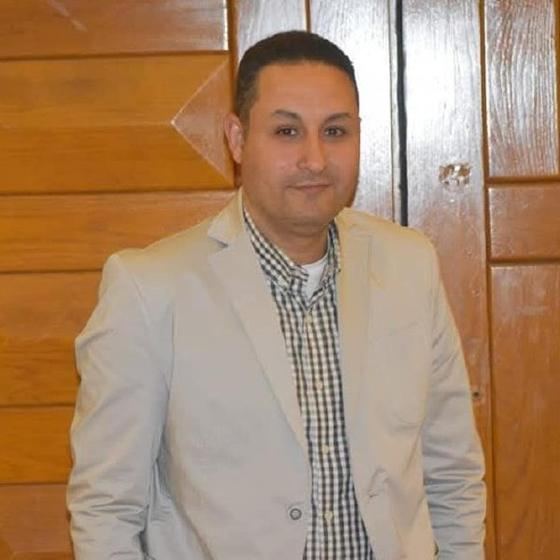
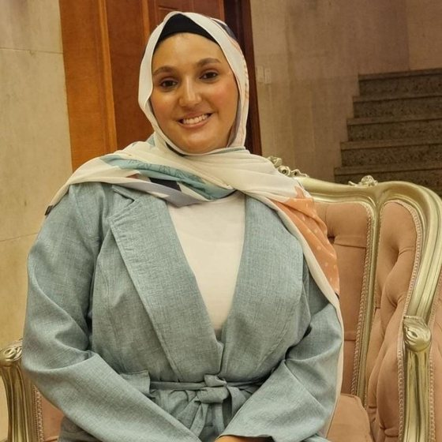

A team of care-home youth and their partners leads the association.

Media personality Nour Shabaan is a PhD researcher in media, and the founder and chairman of Basmat Nour for Jusoor Development, the first development NGO in Egypt founded and run by care-home graduates. He won the Sharjah Government Communication Award 2026 in the best youth initiative in communication category, and holds the title "Solidarity Ambassador" from the Ministry of Social Solidarity. He is the founder of the Jusoor initiative and tournament for sports inclusion and of the Basmat Nour Observatory, and the author of the book "When Life Found Me".

Holds a bachelor's degree in social work and a bachelor's degree in education, a special diploma in mental health, and a preliminary master's year. A supporter and practitioner in alternative care and orphanages for nearly 20 years. He has devoted his time and effort to serving children and young people in orphanages, and helped found Basmat Nour as a sustainable entity that leaves a real mark on future generations. An educational consultant and coordinator for the integration and placement of young people in social and educational institutions, and a member of the Teachers' Syndicate and the Syndicate of Special Needs Workers. His work focuses on community integration and psychological rehabilitation, believing that building a person psychologically is the foundation for the start of their life, especially after leaving the care home.

Holds a bachelor's degree in law and works as Assistant General Manager at the Egyptian Company for Petroleum Services.
He served as Director General at the Presidency of the Republic and received the Order of the Republic, Second Class, from President Abdel Fattah El-Sisi. He has made development contributions in volunteer work.

An inspiring example among care leavers who proved through work and effort that where you start does not limit your ambition. He works as a football coach at Real Avido club and is a member of the Sports Professions Syndicate. He holds a bachelor's degree in business administration. He did not stop at personal success: he chose to help create impact for others, combining sporting experience, management training and leadership in service of young people in orphanages.

Studied at the Faculty of Arts, Ain Shams University, and a founding member of a number of community initiatives. She devotes her efforts to breaking the social stigma attached to girls from care homes, and to preparing them psychologically and practically for marriage and building a stable family. Gehad stood out among the organizers of the Basmat Nour women's "Jusoor" tournament, out of her deep belief in fair opportunity for every young woman and in her ability to show up, compete and take an active part, combining university study with awareness-raising community work and the sports and social empowerment of girls.

A teacher with four years of experience in development and social work. She worked at Resala Association from 2019 to 2024 and trained with a charity initiative from 2024 to 2025. Holds a bachelor's degree in education from Alexandria University and a qualification in social work, and brings training skills and full command of Microsoft Office.